© 2017 Heidrick & Struggles, Inc. All rights reserved.
Research in recent years has shown a correlation between gender diversity on boards and superior shareholder value. When the numbers of board directors of African-American, Hispanic, and Asian descent reach critical mass, which will enable statistically significant correlations with share-holder value, we believe the results will be the same. Boards
have been aware of the research on gender and business performance for some time, as the uptick in the rate at which they were adding women in recent years suggests—only 18.0% of new director appointees in 2009 were women versus 29.8% in 2015. But the deceleration in 2016 begs the question: Is this a plateau or dip that will last for some years to come—or merely a pause before the upward climb resumes?
Director profile
Director, Chesapeake Energy
Gloria R. Boyland
Over that eight-year period, the aggregate number for these appointees averaged less than 18%. However, in the past four years, the proportion of these appointees averaged 20.1%, more than four percentage points higher than the 15.8% average for the 2009–12 period.
Note: Numbers may not sum to 100% because of rounding.
Gloria serves as corporate vice president of operations and service support at FedEx Corporation. She holds an MBA from Duke University’s Fuqua School of Business and a JD from the University of Pennsylvania Law School.
Read Gloria’s full bio here.
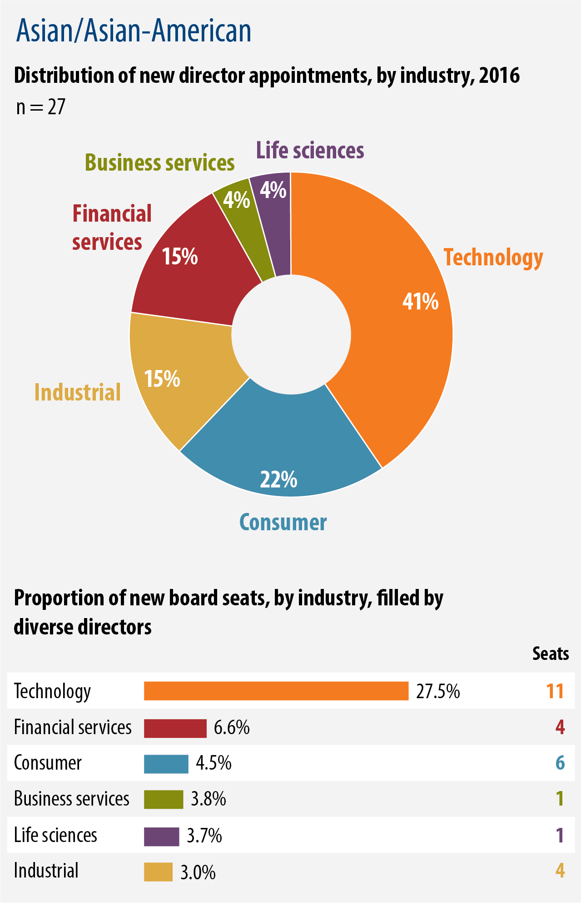
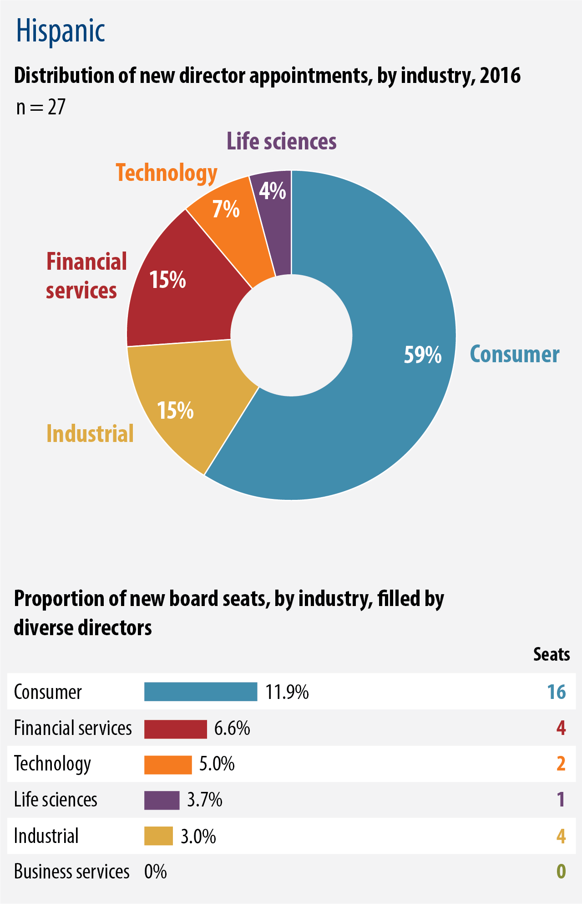
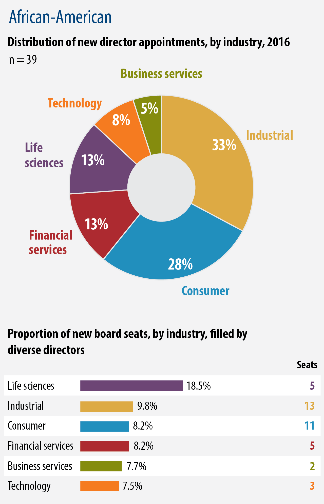
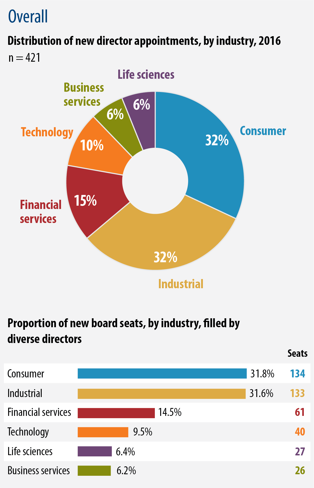
Director profile
Director, Whirlpool
Gen. Larry O. Spencer
Larry serves as the president of the Air Force Association and publisher of Air Force Magazine. After spending more than forty years in the
Air Force, he retired as a four-star general. He holds an MS in business management from Webster College and an MS in industrial resource strategy from the National Defense University.
Read Gen. Larry’s full bio here.
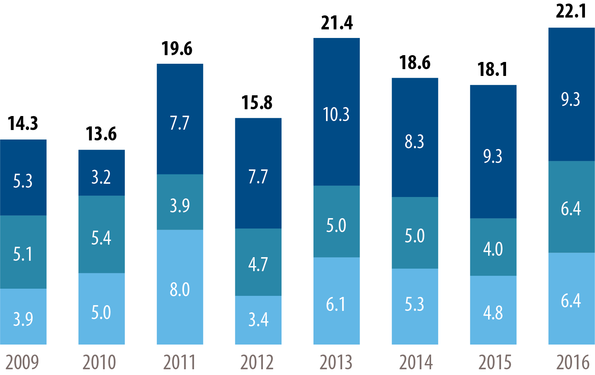
New board director appointments, by ethnicity, %, 2009–16
Asian/Asian-American
Hispanic
African-American
In the aggregate in 2016, African-Americans, Hispanics, Asians, and Asian-Americans constituted a little more than 22% of new board appointees, the highest proportion since the inception of the Board Monitor in 2009.
Director profile
Director, Harley-Davidson
Maryrose T. Sylvester
Now, given the decline in the growth rate in 2016, parity will not arrive until 2032.
Actual vs. projected share of women appointed to Fortune 500 boards, %
Maryrose serves as the president and CEO of Current, a digital energy start-up within GE. She is a GE corporate officer and was instrumental in helping launch the GE Women’s Network. She holds an MBA from Cleveland State University.
Read Maryrose’s full bio here.
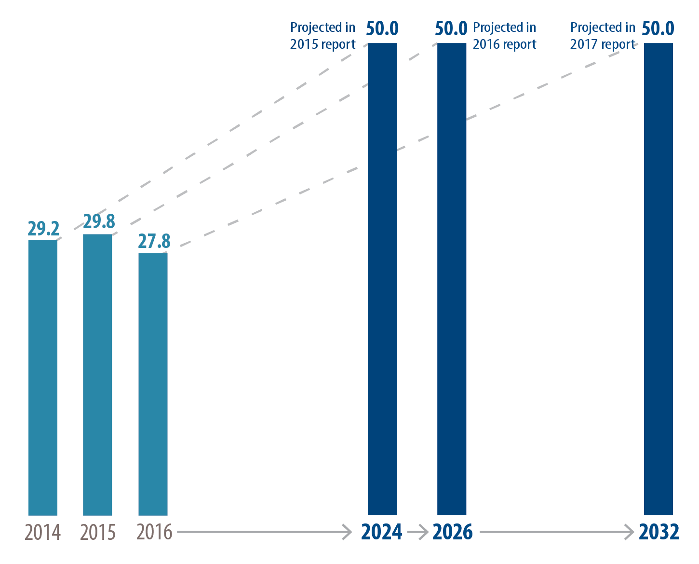
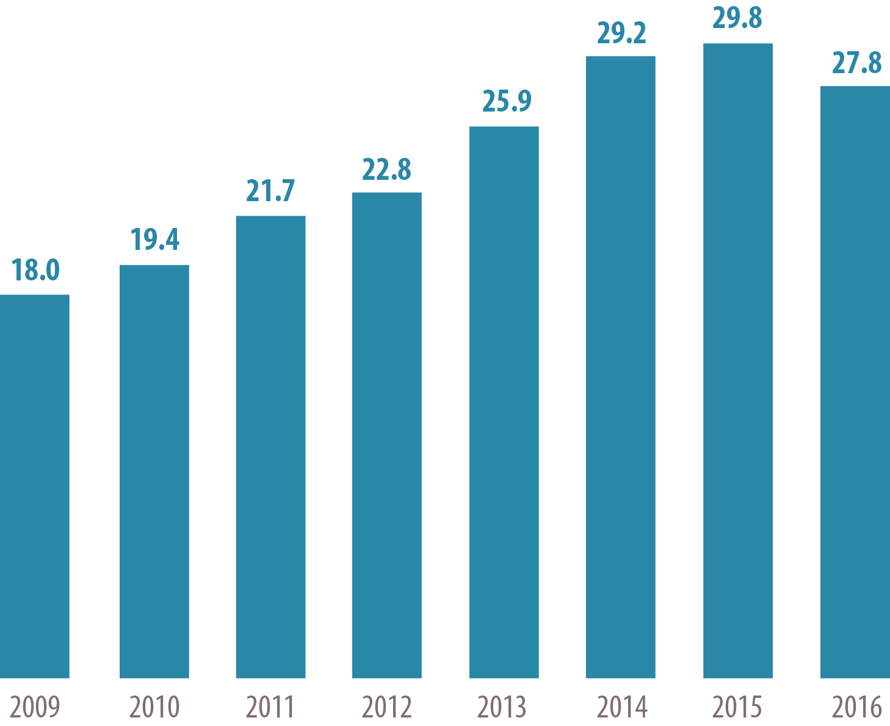
Share of women among new directors appointed to Fortune 500 boards, %, 2009–16
See the pace of change for women to reach parity with men on boards.
Though the number of all board seats filled in 2016 jumped to 421, from 399 the previous year, the number of open seats filled by women dropped to 117, down from 119 in 2015.
In risk (cyber or financial)
With digital or social media
International
Previously served on boards
Experience
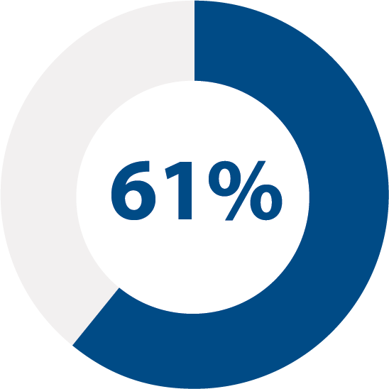
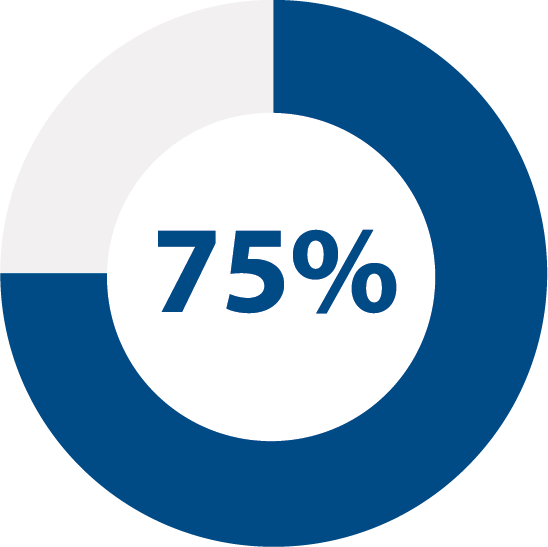
27
27
Asian-American
Hispanic
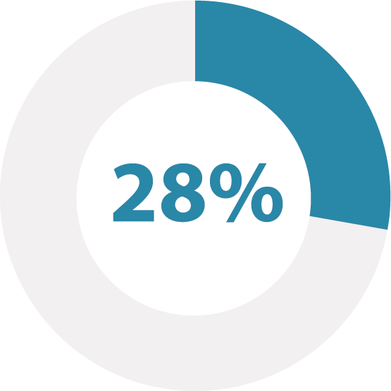
39
117
African-American
Female
Diversity breakdown
Total non-executive director seats as of May 2017 = 4,609.
16%
Current and former CEOs
Retired vs. active executives
50%
Current and former CEOs
54%
46%
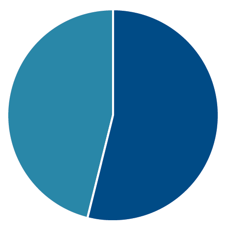
Retired: 192
Active: 229
57
Average age
421
New director seats filled
Snapshot of 2017 findings
Produced by Heidrick & Struggles’ CEO & Board Practice,
the Board Monitor tracks and analyzes trends in non-executive director appointments to Fortune 500 boards.
Data on appointments are tracked through BoardEx,
proxy filings, and corporate websites. Information about executives is gathered from publicly available sources, BoardEx, and a Heidrick & Struggles proprietary database.
To read the full report, click here.
In 2016, Fortune 500 boards, which filled a record number of seats, made strides toward greater diversity, appointing more Hispanic directors than ever. But women directors lost ground. Learn more about the latest trends in board composition and experience in this year’s Board Monitor.
Board diversity at an impasse?
THE HEIDRICK & STRUGGLES BOARD MONITOR